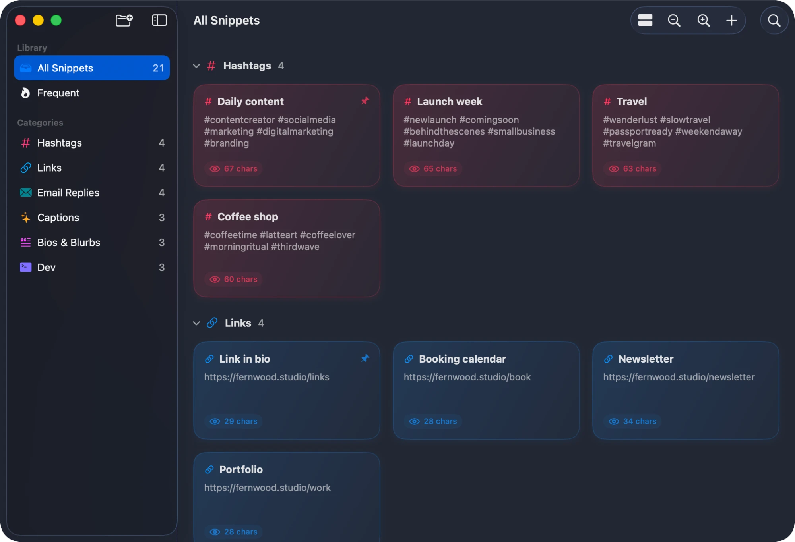
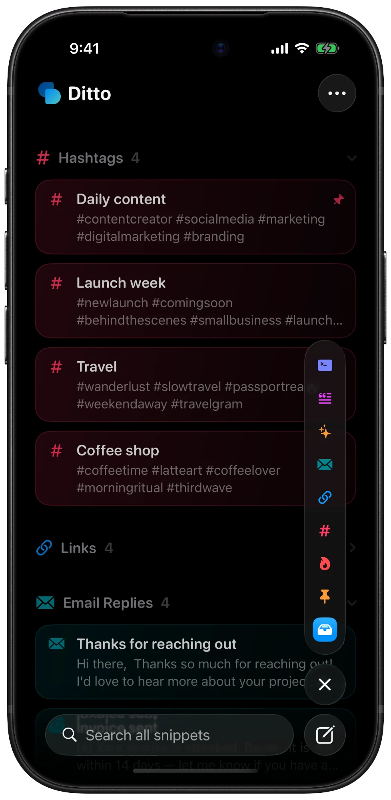

The text you paste all the time, one click away.
Ditto keeps hashtags, links, bios, email replies, and templates in one place on your Mac and iPhone. Click a snippet to copy it.
Try it — click a card.


What it does 8
- Click to copy
Snippets are cards. Click one and it’s on your clipboard.
- Categories
Give each category its own color and icon, group by category or date, and collapse what you don’t need.
⌘⇧N - Menu bar search
Search and copy from anywhere on the Mac. Paste copied text into Ditto to start a new snippet.
- Frequent and pinned
The snippets you copy most rise to the top, and you can pin the ones you always want close.
- Share links
Copy a
ditto://link for a snippet or a whole category. Opening one adds it to a library, merging by name and skipping duplicates. - Import and export
Back up or move your whole library as a JSON file.
- Shortcuts and Spotlight
Copy and create snippets with App Intents, and find them from Spotlight.
- Native on both
SwiftUI and SwiftData, with zoomable cards on the Mac and a category rail on iPhone.
⌘+ ⌘–
Made by Daniel McCullum
Ditto ships as source for now. Clone it, build it in Xcode, or double-click Build Ditto.command.
View on GitHub ↗